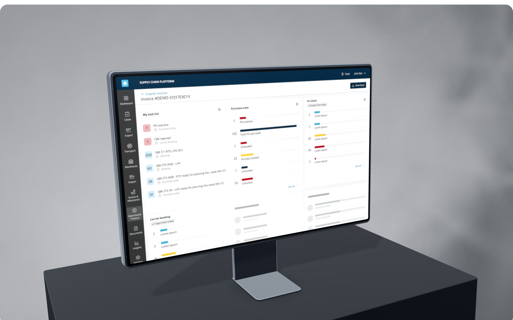

Case study
Maersk
Took design from an afterthought to a strategic function — across one of the world's largest logistics platforms.

The starting point
Operators juggled 10+ disconnected tools to complete a single task.
Terminals, spreadsheets, internal web tools, and manual workarounds — a constellation of legacy systems that operators lived in every day, with no single product holding it together.
The challenge
One platform, three user types, no design foundation — inside an engineering-led organisation.
No design system, no research practice, no shared components. Starting from zero in a highly complex domain, with 20+ product teams already shipping.
The transformation
Design moved from order-taker to strategic partner.
The biggest shift wasn't a product or a tool — it was the role design played in the organisation. When I joined, design was downstream of engineering. When I left, design had a seat at the product strategy table.
The playbook
One system, not twenty
To one scalable system that lets all 20+ product teams build faster and more consistently — replacing the components each team had been rolling for itself.
A quality gate teams wanted to pass
How 20+ teams stayed consistent: a system, clear instructions, and a quality gate. Rolling it out was a change effort as much as a design one — managing stakeholders, advocating, and anchoring new ways of working in documentation.
Three practices, not one team
Restructured a growing team into focused practices — product design, research, and design systems — so each had its own craft to deepen rather than everyone doing a bit of everything.
The result
6 → 12
Product designers, hired and structured into focused practices
3
Dedicated practices — product design, research, design systems
20+
Product teams building on the design system
4.25
Gallup team engagement, above the 3.90 platform average
He is an exemplary leader who genuinely cares about his people.
Simon
UX Designer, Maersk
Next All work